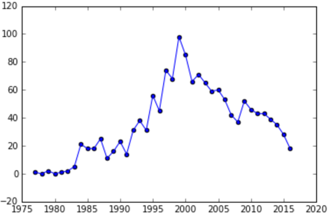
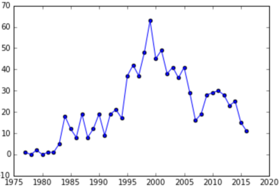
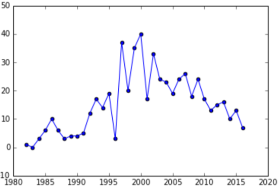
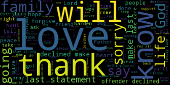

LOADING
Execution Examiners
Death Row Analysis
As of November 2016, 1440 men and women have have been put to death across the United States since 1976. Over one third of those executions have taken place in Texas alone. We took a closer look at the practice that is taking so many lives by examining the number of executions over time, analyzing the number of executions per state, and exploring the inmates’ mindset in their final moments.
The Texas Department of Criminal Justice provides information on executed offenders including basic information such as their name, age, and race. The information that inspired us to investigate further was the last statements that were provided by the website. In order to broaden our scope, we decided to add national data from the Death Penalty Information Center and compare Texas executions to all executions across the county.
Initially, we wanted to find out if there were any anomalies in the data we found about the executed offenders, if there were any relationships that are not immediately apparent. These questions led to us analyzing the trends in the number of executions per year at a national level compared to the state of Texas alone and then seeing the number of executions total per state. After finding that Texas stood out in both cases, we became interested in what the offenders in Texas chose to say as their final statement. With this new question, we went on to explore the most used term in their final statements and analyze their sentiments moments before their execution.
In order to draw conclusions, we visualized the data using scatter plots, pie charts, choropleth maps, and a word cloud. The scatter plot was used to map the rate of executions per year. This plot was useful in finding a trend among the number of executions across the county and in Texas alone. Using a line to connect the points on the scatter plot, made it easy to note the increases and decreases in the rate of executions yearly. A pie chart was used to visualize the percentages of the offenders’ sentiments according to their last statement. The pie chart provided a simple representation that effectively communicates the sentiments found among Texas offenders. We used choropleth maps to show the total number of executions for each state. Using this visualization made it easy to see which states had the most executions. In order to display the most used words in the offenders’ last statements, we used a word cloud. This visualization communicates which words were used most often in a more visually appealing way than using a list or words along with the number of occurrences. We used a random forest classifier to predict the sentiments of the offenders in their final moments based on the text of their last statements. We also used this classifier to predict the sentiment of the offender based on other features such as age, race, juvenile, volunteer, foreign national. We chose to use a random forest because it is very quick to train and are pretty tough to beat.
From the time analysis, we learned that there is an increase up to the year 2000 and then a sudden decrease that remains constant up to now. It is interesting that the country as a whole follows this pattern even when not considering Texas.
 This is significant because Texas is the state where the majority of executions occur. Texas also follows this trend. A takeaway from this is that something happened in the year 2000 that did not favor the death penalty and caused a decline in its use.
From the location analysis, we learned straightaway that there was a major anomaly. Texas showed an extreme amount of executions compared to any other state. This finding led us to focus more on Texas by taking a look into the last moments of all those that were executed.
When examining the offenders’ sentiment, we were able to see the relational percentages between the different sentiments of the final statements using a pie chart. This gave some unexpected reasoning for one of our statistical methods used.
From the sentiment analysis, we had higher hopes, but the score it gave us was low. We did not get a high score when using the text from the final statements to predict the sentiment label we gave it.
Using a random forest classifier, we found that there were features from the data we had on the offenders that gave significant scores for predicting what some of the sentiments of their final statement is. The features used were Age, Juvenile, Volunteer, Foreign National, FIPS (County Code), and Race. The sentiments that were successfully predicted were “Resentful” and “Indifferent”. The original test ran with the sentiments enumerated was inconclusive, but after individually testing the sentiments on a binary basis, we were able to find some high scores. Taking a look back at the pie chart, it can be seen that the lowest percentages correspond with the sentiments that were able to be classified the best. Possible reason for this is that the more rare cases of sentiment had feature values that stood out more from those that occurred often.
From looking at the term frequencies of the final statements, we made a surprising discovery. One would not think that people capable of committing crimes worthy of a death sentence would have positive things to say before passing on. Yet some of the most frequent words found were “love”, “family”, “God”, “sorry”, and “thank”. We used WordCloud to visualize these terms.
